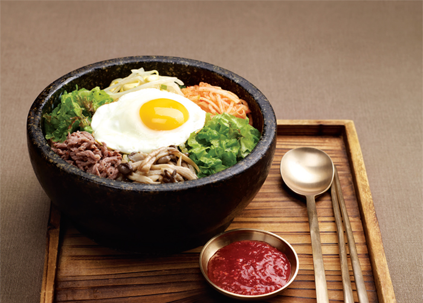

| "Along with kimchi, bibimbap takes its place among the favored foods in Korean cuisine. Literally meaning 'mixed rice,' it's a popular meal consisting of white rice topped with vegetables, beef, a whole egg, and gochujang (red chili pepper paste). For those who cannot handle the spiciness (like our children), you can substitute with soy sauce or Sriracha (rooster sauce) in place of it." | |
| Vegetable oil can be substituted for sesame oil when stir-frying. To keep rice from sticking, make sure wok is very hot and well oiled.This is a good recipe although I've tweaked it around to make it just like in our favorite Thai restaurant: add chicken and/or shrimp as well as the ham. I season the chicken with oyster sauce and some cinnamon.This was a real hit at our house. I cooked the rice in the rice cooker. I omitted the salt as the soy is very salty. I added yellow and red bell peppers. Very good. |  |
| This is a sweeter rice dish, with lychees and raisins adding a pleasant and refreshing sweetness, balanced with salty cashew nuts. Maggi sauce is a German savory sauce popular in Thailand.Heat the oil in a wok or large skillet over medium-high heat. Stir in the garlic and cook a few seconds until fragrant, then stir in the carrots and onion, and continue cooking until the onion begins to soften. Add the cold rice, and cook and stir until hot. Pour in the soy sauce, soy seasoning, green onions, cashews, raisins, salt, and white pepper. Cook and stir until hot, then stir in the quartered lychees to serve. |